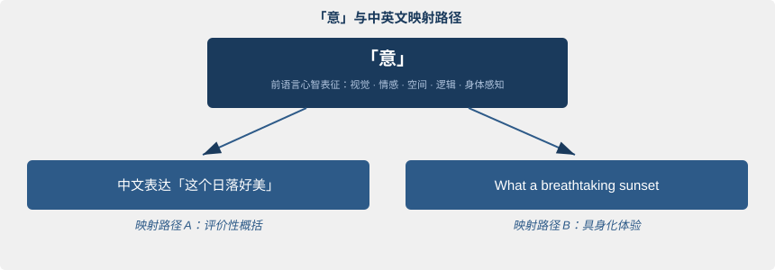
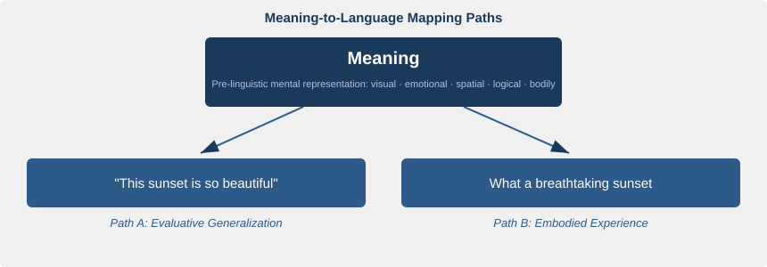
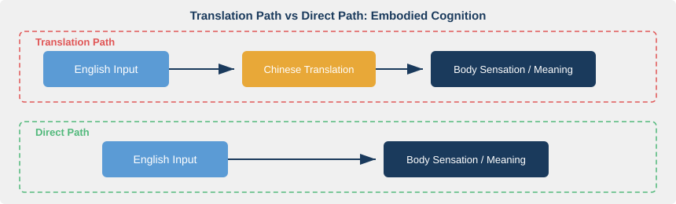

第二章：意——语言之前的世界
Meaning Before Language
"Thought is not merely expressed in words; it comes into existence through them." — Lev Vygotsky
核心问题：在你开口说话之前，大脑里到底发生了什么？
2.1 一个让心理学家困惑的实验
1971年，认知心理学家 Roger Shepard 和 Jacqueline Metzler 在斯坦福大学做了一个简单却深远的实验。他们给受试者展示两个三维几何体的图片，让他们判断：这两个形状是同一个物体的不同角度，还是彼此的镜像？
受试者的反应时间与两个图形之间的旋转角度呈完美的线性关系。角度差越大，判断时间越长。就好像大脑里真的有一只"手"在转动那个物体，一度一度地旋转，直到两个形状对齐。
这就是著名的心理旋转实验（Mental Rotation Experiment）。它证明了一件被许多人忽视的事：人类可以在完全不使用语言的情况下进行复杂的认知操作。受试者在做判断时，脑子里没有词汇，没有句子，只有一个三维物体在空间中翻转的动态意象。
Oliver Sacks 在《看见声音》（Seeing Voices, 1989）中记录了另一个方向的证据。他观察到，从未接触过有声语言的先天性聋人，拥有完整的思维能力。他们用视觉-空间模式思考，用手语交流，思维的丰富程度丝毫不亚于听力正常的人。语言可以是视觉的、空间的、手势的，不一定是声音的。
这两个案例指向同一个结论：思维不依赖语言。在你开口之前，脑子里已经有了"什么东西"。那个东西，本书称之为「意」。
2.2 什么是「意」：前语言心智表征
给「意」一个定义
「意」是一种先于语言存在的心智表征（pre-linguistic mental representation）。它不是文字，不是句子，而是一种多模态的心智状态。这种状态可能包括视觉意象、情感色调、空间关系、逻辑结构、身体感觉，或者它们的某种组合。
一个具体的例子：你闻到刚出炉的面包。脑海中涌起一股温暖，嘴里开始分泌唾液，你可能想起了小时候的某个早晨。这一整团感受，在你还没说出"好香"之前就已经存在了。这就是「意」。
双编码理论：思维为什么可以不用词
Allan Paivio 在1986年提出了双编码理论（Dual Coding Theory）。这个理论说，人脑同时运行两套独立的编码系统。一套是语言编码（verbal code），专门处理词汇和句法。另一套是非语言编码（nonverbal code），负责处理意象、空间关系和感知经验。
关键在于：这两套系统虽然相互连接，但可以独立运作。你能在没有任何语言参与的情况下，形成一个清晰的视觉意象。Shepard 的受试者就是这么做的。他们的非语言编码系统在独立工作，不需要语言编码系统的帮助。
为什么这对学英语的人很重要？因为它意味着思维不必以语言为载体。语言只是心智表征的一种输出形式，不是唯一形式。既然思维可以独立于语言，那么从"意"到英文的路径就不必经过中文。
概念结构：语言映射的到底是什么
Ray Jackendoff 在2002年的《语言的基础》（Foundations of Language）中进一步追问：语言表达到底映射的是什么？他的回答是：底层概念结构（Conceptual Structure），而非另一种语言。
举个例子。你用英文说 "The cat is on the mat"，你表达的不是一串英文词汇，而是一个空间关系概念，即一个物体位于另一个物体之上。中文说"猫在垫子上"，映射的是同一个概念结构，只是映射路径不同。概念结构独立于任何特定语言存在。
最重要的区分
「意」不等于"中文意思"。这是本书要反复强调的区分。
中国英语学习者长期的习惯是：看到英文，翻译成中文，然后觉得"理解了"。在这个过程中，"中文意思"被默认为理解的终点。但中文意思只是「意」的一种表达形式，它本身也是一条映射路径，不是目的地。
换一种说法：中文和英文都是地图，不是地形本身。你以为你在看地形，其实你只是在看另一张地图。

图 2-1 表达了本章的核心模型。「意」处于中心，中文和英文分别是两条不同的映射路径，各有侧重，各有盲区。比如"这个日落好美"选择了评价性概括，而 "What a breathtaking sunset" 将日落的冲击具身化为呼吸被夺走的体验。两句话背后触发的是同一个「意」，但走的路不同，唤起的联想也不同。
2.3 婴儿的秘密：没有翻译的习得
每个人都成功地学会了至少一种语言。这件事太普遍了，普遍到我们忘了它有多不可思议。
声音直连「意」
一个十二个月大的婴儿第一次听到"水"这个音节时，她不是把"水"翻译成某种内在语言再理解的。她是在一个具体场景中（渴了，有人递来杯子，液体流入嘴里），将这个声音与一整团感知体验建立了直接关联。声音直接映射到「意」，没有中间环节。
Michael Tomasello 在2003年的《建构一种语言》（Constructing a Language）中，用用法建构理论（Usage-Based Theory）解释了这一过程。儿童不是通过学习抽象语法规则来获得语言能力。他们在真实使用情境中反复听到和使用语言，逐步归纳出模式。习得路径是：感知世界（意）→ 听到声音 → 将声音与意建立映射。
这条路径的核心特征是"直连"。声音直接触发意，意直接触发声音，没有翻译。
成年人的中文"高速公路"
成年人学外语为什么不同？因为你已经有了一条修好的高速公路。
当你听到 "water" 时，大脑不会像婴儿那样直接将这个声音映射到"渴了、液体、杯子"的意象群上。它会先跳到"水"这个中文词，然后通过中文唤起那些意象。中文"截胡"了「意 → 英文」的直连映射通路。
这不是因为成年人的大脑丧失了直连的能力。神经可塑性（neuroplasticity）研究表明，成人大脑仍然可以建立新的神经通路。问题在于效率竞争：中文通路太强大了，它像一条车流密集的高速公路，每次都被优先选择。
那怎么办？你不需要回到婴儿状态（那既不可能也不必要）。你需要用正确的方法，刻意地为「意 → 英文」这条新通路铺设基础、增加流量，直到它足够强壮，可以和中文通路竞争。后续章节会展开这个"如何做"的问题。
2.4 概念隐喻：意如何塑造语言
隐喻是思维的脚手架
大多数人以为隐喻是一种修辞手法，用来让文章更生动。George Lakoff 和 Mark Johnson 在1980年的《我们赖以生存的隐喻》（Metaphors We Live By）中提出了一个完全不同的看法：隐喻是人类思维的基本结构。
什么意思？我们用已知的、身体的经验去理解抽象概念。这种从具体到抽象的映射，叫做概念隐喻（Conceptual Metaphor）。「意」不是悬浮在大脑中的抽象符号，它根植于身体经验和空间感知，然后通过隐喻映射被语言捕获。
三组隐喻，三种身体经验
TIME IS MONEY（时间是金钱）。 英语把时间体验为可消耗的资源。你可以 "spend time"（花时间）、"waste time"（浪费时间）、"save time"（节省时间）、"invest time"（投资时间）、"run out of time"（时间用完了）。这不是几个碰巧相似的表达，而是一整套系统性的隐喻映射。时间被映射到金钱/资源的概念域上。
ARGUMENT IS WAR（辩论是战争）。 英语把辩论体验为一场战斗。"Defend your position"（捍卫你的立场）、"attack the argument"（攻击论点）、"win the debate"（赢得辩论）、"shoot down an idea"（击落一个想法）。辩论者是战士，论点是武器，说服对方是胜利。
LIFE IS A JOURNEY（人生是旅程）。 "At a crossroads"（在十字路口）、"go far"（走得远）、"hit a dead end"（走进死胡同）、"find your path"（找到你的路）。人生被体验为一条有方向、有阶段、有目的地的路。
中文和英文的隐喻地图不一样
中文也有概念隐喻，但映射方式常常不同。
"时间就是金钱"在中英文中高度重合。这是因为两种文化对时间有相似的经济化体验。但"人生如戏"（life is a drama/performance）就与 LIFE IS A JOURNEY 大不相同了。英文强调方向和目的地，中文这个隐喻强调角色和表演。同一个底层的「意」（对人生复杂性的感知），被两种语言隐喻化到了不同的概念域上。
这就是翻译式学习会碰壁的深层原因。当你把 "I'm at a crossroads" 翻译成"我在十字路口"，字面上没有错。但你丢失了背后的整套隐喻系统：人生是旅程，选择是方向，犹豫是驻足。只理解中文字面意思，你看到的是一个人站在路口。进入英文的隐喻体系，你看到的是一个人面临人生方向的重大抉择。
2.5 心智意象与具身认知
概念不是词典条目
Lawrence Barsalou 在1999年发表了一篇改变认知科学走向的论文，提出了知觉符号理论（Perceptual Symbol Systems）。传统观点认为，概念是抽象的、非模态的符号，像词典定义一样存储在大脑中。Barsalou 的挑战很直接：概念是基于感知和运动经验的模拟（simulation）。
什么叫模拟？当你理解"椅子"这个概念时，大脑不是检索一个抽象定义。它重新激活你过去坐在椅子上时的部分神经模式：臀部接触坐垫的触感，脊背靠上靠背的支撑感，视线中椅子扶手的轮廓。理解一个词，就是在身体层面重演一次相关经验的片段。
语言理解锚定在身体之上
这就是具身认知（Embodied Cognition）的核心主张：语言理解的本质是身体经验的重新激活。
有实验证据。当你读到 "grasp an idea"（抓住一个想法）时，大脑的运动皮层会微弱地激活，仿佛你真的在伸手去抓什么东西。当你读到 "a warm welcome"（热情的欢迎）时，温度感知相关的脑区也会有所回应。语言不是在真空中被处理的，它锚定在身体之上。
对英语学习意味着什么
如果你通过中文翻译来理解英文，你激活的是中文表达所关联的身体经验模式，而非英文的。
一个例子：你把 "heartbreaking" 翻译成"令人心碎"再去理解。你激活的是"心碎"在中文语境中的身体意象。但 "heartbreaking" 在英文中的身体共鸣，即心脏被物理性地打碎的那种锐痛，可能与中文的"心碎"有微妙但重要的差异。翻译看似完成了理解，实际上偷换了身体经验。
要真正"懂"英文，需要让英文直接触发身体和感知层面的「意」。不是 English → 中文翻译 → 身体感知，而是 English → 身体感知。
图 2-2 对比了两条路径。翻译路径多了一个中转站，延迟了理解，也扭曲了感知。直连路径让英文像母语一样直接激活身体层面的「意」。这条通路如何建立，是后续章节的核心议题。
2.6 语言实验：画出你的「意」
这个练习只需要五分钟，但它可能改变你对语言和思维关系的理解。
步骤一：感知。 选一个你熟悉的场景，比如"下雨了"。闭上眼睛，花三十秒去感受。不要在脑子里说任何词。不要说"雨"，不要说"rain"。只感受：雨落在屋顶上的声音、空气中的潮湿和泥土气息、雨滴打在伞面上传导到手柄的振动、远处模糊的轮廓、鞋底踩过水洼时的凉意。
步骤二：中文描述。 睁开眼，用中文描述你刚才感受到的。写下来或说出来都可以。
步骤三：英文描述。 现在换成英文，描述同一个场景。注意：不要翻译你的中文句子。重新从那团感受出发，用英文去捕捉它。
步骤四：对比观察。 把两段描述放在一起看。你会发现它们选择了不同的细节、不同的入口。也许中文版侧重了情绪和氛围（"淅淅沥沥的雨声让人安静下来"），而英文版侧重了感官和动作（"Raindrops drumming on the umbrella, the smell of wet earth"）。两者都源自同一个「意」，但投射出了不同的面。
这就是"意在言先"的含义。意先于任何语言存在。语言所做的，只是从这团多模态的心智体验中选取一部分，用词句去近似地表达。不同的语言，做出不同的选择。
2.7 本章要点与过渡
- 「意」是前语言的多模态心智表征，包括视觉意象、情感、空间关系、逻辑结构和身体感觉，不等于任何一种语言的表达。
- 中文和英文都是「意」的映射路径，都是地图，不是地形本身。把中文意思当作理解终点，是一种认知错觉。
- 婴儿的语言习得依赖「意 → 声音」的直连映射，没有翻译中介。成年人的中文通路会"截胡"这条直连，但并非不可逾越。
- 概念隐喻塑造语言表达。不同语言对同一个「意」的隐喻化路径不同，翻译式学习会丢失隐喻层的信息。
- 具身认知是理解的根基。语言理解本质上是身体经验的重新激活。英文需要直接触发身体感知，而非经由中文中转。
既然「意」不等于中文，那么理论上完全可以建立「意 → 英文」的直连通路，让英文像母语一样直接从「意」中生长出来，而不是从中文翻译而来。但这条直连之路到底是什么样的？它的认知机制是什么？成年人如何在已有中文通路的前提下，为英文开辟一条新路？
第三章将展开这个问题。
参考文献
-
Shepard, R. N., & Metzler, J. (1971). "Mental Rotation of Three-Dimensional Objects." Science, 171(3972), 701–703. DOI: 10.1126/science.171.3972.701 — 心理旋转实验的原始论文，证明人类可以在不使用语言的情况下进行复杂的空间认知操作。
-
Sacks, O. (1989). Seeing Voices: A Journey into the World of the Deaf. University of California Press. — 通过对聋人世界的观察，论证思维可以完全不依赖有声语言，语言可以是视觉-空间模态的。
-
Paivio, A. (1986). Mental Representations: A Dual Coding Approach. Oxford University Press. — 双编码理论的奠基之作，论证人脑同时运行语言编码和非语言（意象）编码两套系统，为「意」的前语言性质提供认知基础。
-
Jackendoff, R. (2002). Foundations of Language: Brain, Meaning, Grammar, Evolution. Oxford University Press. — 论证语言表达映射的是底层概念结构而非另一种语言，为「意」作为语言之下的独立层次提供理论支撑。
-
Lakoff, G., & Johnson, M. (1980). Metaphors We Live By. University of Chicago Press. — 概念隐喻理论的经典之作，揭示隐喻不是修辞手法而是人类思维的基本结构，解释了不同语言对同一「意」的隐喻化差异。
-
Tomasello, M. (2003). Constructing a Language: A Usage-Based Theory of Language Acquisition. Harvard University Press. — 用法建构理论，论证儿童通过在真实使用情境中的体验习得语言，而非通过翻译或抽象规则。
-
Barsalou, L. W. (1999). "Perceptual Symbol Systems." Behavioral and Brain Sciences, 22(4), 577–660. DOI: 10.1017/S0140525X99002149 — 知觉符号理论，论证概念不是抽象符号而是基于感知和运动经验的模拟，为具身认知和语言理解的身体性提供理论框架。
-
Lakoff, G. (1987). Women, Fire, and Dangerous Things: What Categories Reveal About the Mind. University of Chicago Press. — 拓展了概念隐喻理论，深入探讨范畴化与身体经验的关系，补充了「意」如何通过身体经验被结构化的论证。
Chapter 2: Meaning Before Language
"Thought is not merely expressed in words; it comes into existence through them." — Lev Vygotsky
Core question: What actually happens in your mind before you speak?
2.1 An Experiment That Puzzled Psychologists
In 1971, cognitive psychologists Roger Shepard and Jacqueline Metzler ran a deceptively simple experiment at Stanford. They showed participants pictures of two three-dimensional geometric shapes and asked one question: are these two shapes the same object seen from different angles, or mirror images of each other?
The reaction-time data told a striking story. Response time scaled linearly with the angular difference between the two figures. The greater the rotation, the longer participants took. It was as though the brain contained a hand that physically turned the object, degree by degree, until the two shapes aligned.
This is the famous Mental Rotation Experiment. It proved something often overlooked: humans can carry out complex cognitive operations without using language at all. During the task, participants reported no words, no sentences. Just a three-dimensional object tumbling through mental space.
Oliver Sacks documented a complementary finding in Seeing Voices (1989). He observed that congenitally deaf individuals who'd never encountered spoken language possessed complete, rich thought. They reasoned in visual-spatial patterns and communicated through sign language; the depth of their cognition was in no way diminished. Language, it turns out, can be visual, spatial, gestural. It doesn't have to be sound.
These two cases point to the same conclusion: thought doesn't depend on language. Before you open your mouth, something is already there in your mind. This book calls that something yì (意).
2.2 What Is Yì: Pre-Linguistic Mental Representation
Defining yì
Yì is a pre-linguistic mental representation. It isn't text. It isn't sentences. It's a multimodal mental state that may include visual imagery, emotional tone, spatial relations, logical structure, bodily sensation, or some combination of these.
A concrete example: you smell bread fresh from the oven. A wave of warmth floods your mind, saliva gathers in your mouth, and maybe you recall a particular morning from childhood. That entire bundle of feeling exists before you've said "smells great." That's yì.
Dual Coding Theory: why thought can skip words
Allan Paivio proposed Dual Coding Theory in 1986. The theory holds that the human brain runs two independent coding systems in parallel. One is a verbal code that handles vocabulary and syntax. The other is a nonverbal code that handles imagery, spatial relations, and perceptual experience.
Here's what matters: the two systems connect to each other, but they can also run independently. You can form a vivid mental image with zero linguistic involvement. Shepard's participants did exactly that. Their nonverbal coding system worked on its own, no help needed from the verbal side.
Why does this matter for English learners? Because it means thought doesn't require language as a vehicle. Language is one output format for mental representations, not the only one. If thought can exist independently of language, then the path from yì to English doesn't have to run through Chinese.
Conceptual structure: what does language actually map onto?
In Foundations of Language (2002), Ray Jackendoff pressed the question further: what do linguistic expressions actually map onto? His answer: an underlying Conceptual Structure, not another language.
Consider the English sentence "The cat is on the mat." You're not expressing a string of English words. You're expressing a spatial-relation concept: one object located above another. The Chinese "猫在垫子上" maps onto the same conceptual structure; only the mapping path differs. Conceptual structure exists independently of any particular language.
The critical distinction
Yì is not the same thing as "the Chinese meaning." This is a distinction the book will return to again and again.
Chinese learners of English have a deep habit: see English, translate to Chinese, then feel they've "understood." In this process, the Chinese meaning is treated as the endpoint of comprehension. But Chinese meaning is just one expression of yì. It's a mapping path too, not the destination.
Put differently: Chinese and English are both maps. Neither is the terrain itself. You think you're looking at the terrain, but you're really just looking at another map.

Figure 2-1 captures the chapter's core model. Yì sits at the center; Chinese and English are two separate mapping paths, each with its own emphasis and blind spots. "这个日落好美" selects evaluative summary. "What a breathtaking sunset" grounds the impact in a bodily experience: breath being taken away. Both utterances spring from the same yì, but they travel different routes and evoke different associations.
2.3 The Infant's Secret: Acquisition Without Translation
Every person alive has successfully learned at least one language. This fact is so universal that we've forgotten how remarkable it is.
Sound connects directly to yì
When a twelve-month-old hears the syllable "water" for the first time, she doesn't translate it into some inner language before understanding. She's in a concrete situation: thirsty, someone hands her a cup, liquid flows into her mouth. She links that sound to an entire bundle of perceptual experience. Sound maps directly onto yì. No intermediate step.
In Constructing a Language (2003), Michael Tomasello explained this with Usage-Based Theory. Children don't acquire language by learning abstract grammar rules. They hear and use language in real situations, then gradually induce patterns. The acquisition path runs: perceive the world (yì) > hear a sound > link sound to yì.
The defining feature of this path is directness. Sound triggers yì; yì triggers sound. No translation.
The adult's Chinese "highway"
Why is adult foreign-language learning different? Because you've already got a finished highway.
When you hear "water," your brain doesn't map that sound directly onto the imagery cluster of thirst, liquid, and cups the way an infant's would. It jumps first to the Chinese word "水," then uses Chinese to call up those images. Chinese intercepts the direct yì-to-English mapping path.
This isn't because the adult brain has lost its capacity for direct mapping. Neuroplasticity research shows that adult brains can still form new pathways. The issue is competitive efficiency: the Chinese pathway is too strong. It's a busy highway that gets chosen first every time.
So what do you do? You don't need to revert to infancy (that's neither possible nor necessary). You need to use the right methods to deliberately lay the groundwork for a new yì-to-English pathway, increase its traffic, and strengthen it until it can compete with the Chinese highway. Later chapters will take up this "how" question.
2.4 Conceptual Metaphor: How Yì Shapes Language
Metaphor is thought's scaffolding
Most people think of metaphor as a figure of speech, something that makes writing more vivid. George Lakoff and Mark Johnson proposed a very different view in Metaphors We Live By (1980): metaphor is a fundamental structure of human thought.
What does that mean? We use known, bodily experience to comprehend abstract concepts. This mapping from concrete to abstract is called Conceptual Metaphor. Yì isn't a collection of abstract symbols floating in the brain. It's rooted in bodily experience and spatial perception, then captured by language through metaphorical mapping.
Three metaphors, three bodily experiences
TIME IS MONEY. English treats time as a consumable resource. You can "spend time," "waste time," "save time," "invest time," "run out of time." These aren't a handful of coincidentally similar expressions. They form a systematic metaphorical mapping: time is projected onto the conceptual domain of money and resources.
ARGUMENT IS WAR. English treats debate as combat. "Defend your position," "attack the argument," "win the debate," "shoot down an idea." Debaters are warriors. Arguments are weapons. Convincing the other side is victory.
LIFE IS A JOURNEY. "At a crossroads," "go far," "hit a dead end," "find your path." Life is experienced as a road with direction, stages, and a destination.
Chinese and English draw different metaphor maps
Chinese has conceptual metaphors too, but the mappings often differ.
"Time is money" aligns closely across Chinese and English. Both cultures tend to experience time in economic terms. But "人生如戏" (life is drama/performance) diverges sharply from LIFE IS A JOURNEY. English emphasizes direction and destination; this Chinese metaphor emphasizes role and performance. The same underlying yì (a sense of life's complexity) gets metaphorized into different conceptual domains in the two languages.
This is the deep reason translation-based learning hits a wall. When you translate "I'm at a crossroads" as "我在十字路口," the words are correct. But you lose the entire metaphor system behind it: life is a journey, choices are directions, hesitation is standing still. Understanding only the Chinese literal meaning, you see a person standing at a street intersection. Entering the English metaphor system, you see someone facing a major life decision.
2.5 Mental Imagery and Embodied Cognition
Concepts aren't dictionary entries
In 1999, Lawrence Barsalou published a paper that shifted the direction of cognitive science. His Perceptual Symbol Systems theory challenged the traditional view head-on. The old model held that concepts are abstract, amodal symbols stored in the brain like dictionary definitions. Barsalou's counter: concepts are simulations based on perceptual and motor experience.
What does "simulation" mean here? When you understand the concept "chair," the brain doesn't retrieve an abstract definition. It reactivates partial neural patterns from past experience: the feel of your weight settling into a cushion, the support of a backrest against your spine, the outline of armrests in your visual field. Understanding a word is, at the bodily level, a partial replay of related experience.
Language comprehension is anchored in the body
This is the core claim of Embodied Cognition: language comprehension is fundamentally the reactivation of bodily experience.
There's experimental evidence. When you read "grasp an idea," the motor cortex activates weakly, as if you were actually reaching out to grab something. When you read "a warm welcome," temperature-related brain regions respond. Language isn't processed in a vacuum. It's anchored in the body.
What this means for English learning
If you understand English through Chinese translation, you activate the bodily-experience patterns linked to the Chinese expression, not the English one.
An example: you translate "heartbreaking" into "令人心碎" and then process it. What you activate is the bodily image of "心碎" in Chinese context. But the bodily resonance of "heartbreaking" in English (that sharp sense of a heart being physically broken) may differ in subtle but important ways from Chinese "心碎." Translation looks like it completed comprehension. In reality, it swapped out the bodily experience.
To truly "know" English, you need English to directly trigger bodily and perceptual yì. Not English > Chinese translation > bodily perception, but English > bodily perception.

Figure 2-2 contrasts the two paths. The translation path adds a relay station, delaying comprehension and distorting perception. The direct path lets English activate bodily yì the way a first language does. How to build this path is the central concern of the chapters ahead.
2.6 Language Experiment: Draw Out Your Yì
This exercise takes five minutes, but it may change how you think about the relationship between language and thought.
Step one: Perceive. Pick a familiar scene. Say, "it's raining." Close your eyes for thirty seconds and just feel it. Don't form any words in your mind. Don't say "rain" or "雨." Only perceive: the sound of rain on the roof, dampness and the smell of earth in the air, the vibration of raindrops on an umbrella traveling through the handle, blurred outlines in the distance, the coolness of stepping through a puddle.
Step two: Describe in Chinese. Open your eyes. Describe what you felt in Chinese, written or spoken.
Step three: Describe in English. Now describe the same scene in English. Don't translate your Chinese sentences. Go back to that bundle of feeling and capture it fresh in English.
Step four: Compare. Put the two descriptions side by side. You'll notice they select different details and different entry points. Maybe the Chinese version leaned into mood and atmosphere ("淅淅沥沥的雨声让人安静下来"), while the English version leaned into sensation and action ("Raindrops drumming on the umbrella, the smell of wet earth"). Both spring from the same yì, but they project different facets of it.
That's what "meaning before language" means. Yì exists before any language does. What language does is select a portion of this multimodal mental experience and approximate it with words. Different languages make different selections.
2.7 Summary and Transition
- Yì is pre-linguistic, multimodal mental representation. It includes visual imagery, emotion, spatial relations, logical structure, and bodily sensation. It isn't equivalent to expression in any single language.
- Chinese and English are both mapping paths from yì. Both are maps, not the terrain. Treating Chinese meaning as the endpoint of understanding is a cognitive illusion.
- Infants acquire language through direct yì-to-sound mapping with no translation intermediary. The adult's Chinese pathway can intercept this direct link, but it isn't insurmountable.
- Conceptual metaphor shapes language expression. Different languages metaphorize the same yì differently; translation-based learning loses the metaphor layer.
- Embodied cognition is the ground of understanding. Language comprehension is essentially the reactivation of bodily experience. English needs to trigger bodily perception directly, not through Chinese as a relay.
If yì isn't the same as Chinese, then in principle it's entirely possible to build a direct yì-to-English pathway. English can grow directly out of yì, like a first language, rather than from Chinese translation. But what does this direct pathway actually look like? What are its cognitive mechanisms? How can adults, with an established Chinese pathway already in place, open a new route for English?
Chapter 3 takes up these questions.
References
-
Shepard, R. N., & Metzler, J. (1971). "Mental Rotation of Three-Dimensional Objects." Science, 171(3972), 701–703. DOI: 10.1126/science.171.3972.701 — The original mental rotation paper, demonstrating that humans can perform complex spatial cognition without language.
-
Sacks, O. (1989). Seeing Voices: A Journey into the World of the Deaf. University of California Press. — Through observation of the deaf community, argues that thought can be fully independent of spoken language and that language can operate in visual-spatial modalities.
-
Paivio, A. (1986). Mental Representations: A Dual Coding Approach. Oxford University Press. — Foundational work on dual coding theory, showing that the brain runs verbal and nonverbal (imagery) coding systems in parallel, providing cognitive grounding for the pre-linguistic nature of yì.
-
Jackendoff, R. (2002). Foundations of Language: Brain, Meaning, Grammar, Evolution. Oxford University Press. — Argues that linguistic expressions map onto underlying conceptual structure rather than another language, supporting yì as an independent layer beneath language.
-
Lakoff, G., & Johnson, M. (1980). Metaphors We Live By. University of Chicago Press. — Classic work on conceptual metaphor, showing that metaphor is a fundamental structure of thought, not decoration, and explaining how different languages metaphorize the same yì differently.
-
Tomasello, M. (2003). Constructing a Language: A Usage-Based Theory of Language Acquisition. Harvard University Press. — Usage-based theory of how children acquire language through experience in real situations, not through translation or abstract rules.
-
Barsalou, L. W. (1999). "Perceptual Symbol Systems." Behavioral and Brain Sciences, 22(4), 577–660. DOI: 10.1017/S0140525X99002149 — Argues that concepts are simulations based on perceptual and motor experience rather than abstract symbols; provides the theoretical framework for embodied cognition.
-
Lakoff, G. (1987). Women, Fire, and Dangerous Things: What Categories Reveal About the Mind. University of Chicago Press. — Extends conceptual metaphor theory to categorization and bodily experience; supplements the argument for how yì is structured through embodied interaction with the world.